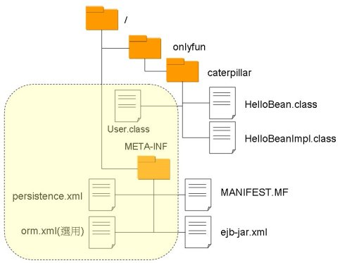

|
|
部署JPA時，必須存在persistence.xml設定檔，其必須位於類別路徑中META-INF資料夾之中，也就是說，若是封裝為EJB-JAR，則persistence.xml必須在EJB-JAR根目錄的META-INF資料夾中，若是封裝為WAR，則persistence.xml必須在WEB-INF/classes/META-INF資料夾中，若是封裝為EAR，則persistence.xml必須在EAR根目錄的META-INF資料夾中。 在Java EE模組中，Persistence Unit會有個獨一無二名稱，容器會以該名稱建立EntityManagerFactory，並用其建立EntityManager，一個persistence.xml中可以定義多個Persistence Unit，以名稱作為區隔。 若您是將Persistence Unit定義在EJB-JAR或WAR模組中，則Persistence Unit的可見範圍僅在該模組之中，若您是將之定義在EAR中，則Persistence Unit的可見範圍為整個應用程式。 以EJB-JAR為例，若要部署JPA，則其JAR檔案中的結構應類似以下黃色區塊部份：  orm.xml是選擇性使用，若您不使用Annotation來標註Entity類別，則可以將對應關係定義在orm.xml中，例如 第一個 JPA（容器管理） 的例子中，可以將User.java中所有的Annotation移除，在META-INF下建立一個orm.xml，程式亦可執行：
<?xml version="1.0" encoding="UTF-8"?> orm.xml中可以定義多個<entity>，您也可以在persistence.xml中，使用<mapping- file>指定對應的XML檔案名稱，或是使用<jar-file>、<class>等來指定JAR或類別檔案以取得對應 之訊息，例如： <?xml version="1.0" encoding="UTF-8"?>
<persistence version="1.0" xmlns="http://java.sun.com/xml/ns/persistence" xmlns:xsi="http://www.w3.org/2001/XMLSchema-instance" xsi:schemaLocation="http://java.sun.com/xml/ns/persistence http://java.sun.com/xml/ns/persistence/persistence_1_0.xsd"> <persistence-unit name="sample" transaction-type="JTA"> <jta-data-source>jdbc/sample</jta-data-source> <mapping-file>user.xml</mapping-file> <mapping-file>room.xml</mapping-file> <exclude-unlisted-classes/> <jar-file>some.jar</jar-file> <class>onlyfun.caterpillar.Some</class> <properties> <property name="toplink.ddl-generation" value="drop-and-create-tables"/> </properties> </persistence-unit> </persistence> |